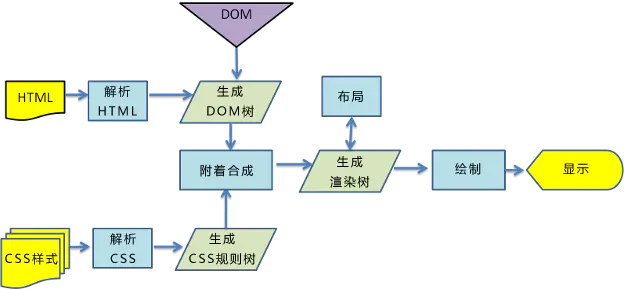
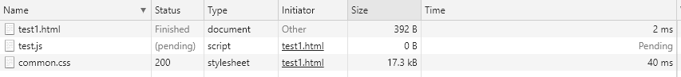
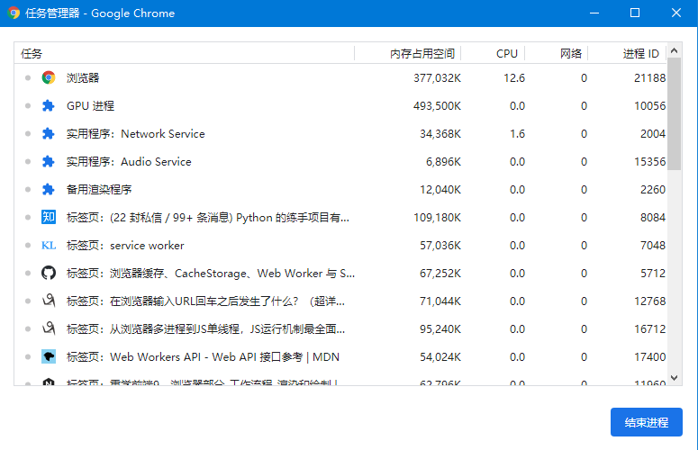
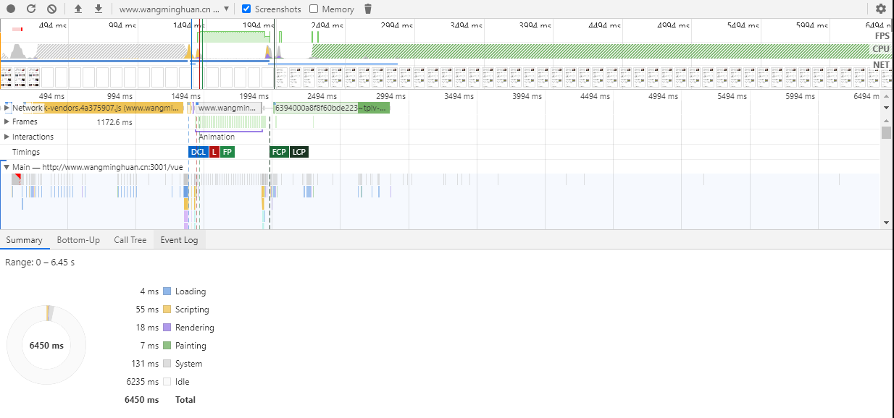
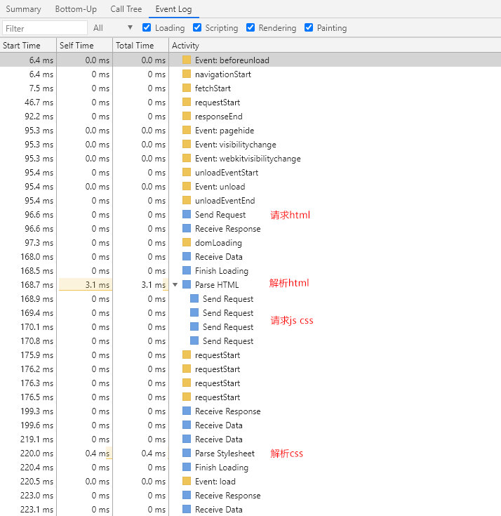
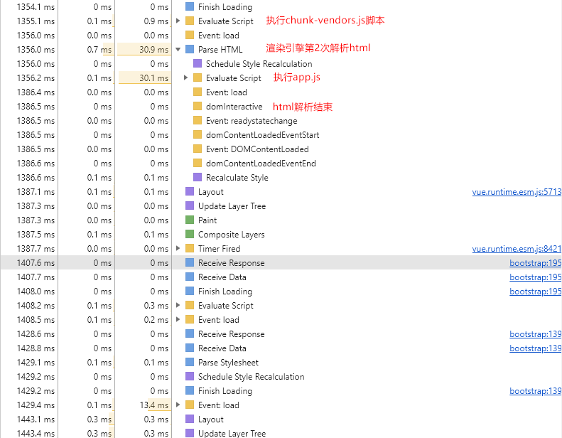
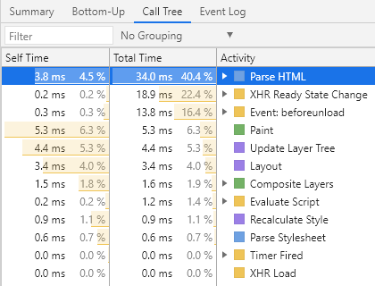

浏览器渲染页面过程解析
概述
一个老生常谈的问题，也是我们每天都在遇到的事情，我们从输入网址，到页面最终展示，中间到底经历了多少个流程？大致流程是：URL 解析 -> DNS 查询 -> TCP 连接 -> 处理请求 -> 接受响应 -> 渲染页面
这里只讨论一个环节：浏览器的渲染流程
渲染过程
先放一张webkit 内核渲染流程：

大体流程就是：
解析html生成DOM树 -> 解析css生成css规则 -> DOM树+CSS规则生成渲染树（render tree） -> 布局render tree -> 绘制 render tree -> GPU会将各层合成，显示在屏幕上
构建DOM树
当浏览器接收到服务器响应来的HTML文档后，会遍历文档节点，生成DOM树。
- DOM树在构建的过程中可能会被CSS和JS的加载而执行阻塞
- display:none的元素也会在DOM树中
- 注释也会在DOM树中
- script标签会在DOM树中
构建CSSOM规则树
浏览器解析CSS文件并生成CSSOM，每个CSS文件都被分析成一个StyleSheet对象，每个对象都包含CSS规则。CSS规则对象包含对应于CSS语法的选择器和声明对象以及其他对象。
- CSS解析可以与DOM解析同时进行。
- CSS解析与script的执行互斥 。
构建渲染树（Render Tree）
通过DOM树和CSS规则树，浏览器就可以通过它两构建渲染树了。浏览器会先从DOM树的根节点开始遍历每个可见节点，然后对每个可见节点找到适配的CSS样式规则并应用。
- Render Tree和DOM Tree不完全对应
- display: none的元素不在Render Tree中
- visibility: hidden的元素在Render Tree中
渲染树布局(layout of the render tree)
布局阶段会从渲染树的根节点开始遍历，由于渲染树的每个节点都是一个Render Object对象，包含宽高，位置，背景色等样式信息。所以浏览器就可以通过这些样式信息来确定每个节点对象在页面上的确切大小和位置。
- float元素，absoulte元素，fixed元素会发生位置偏移。
- 常说的脱离文档流，其实就是脱离Render Tree。
- 新的 CSS 标准中，规定了 will-change 属性，可以大大提升合成策略的效果
渲染树绘制（Painting the render tree）
在绘制阶段，浏览器会遍历渲染树，调用渲染器的paint()方法在屏幕上显示其内容。不过，一般来说，浏览器并不需要用代码来处理这个过程，浏览器只需要把最终要显示的位图交给操作系统即可。
渲染中遇到的其他事儿
渲染阻塞
JS可以操作DOM来修改DOM结构，可以操作CSSOM来修改节点样式，这就导致了浏览器在遇到<script>标签时，DOM构建将暂停，直至脚本完成执行(src属性的话需要等待下载且执行完毕)，然后继续构建DOM。JS也可以阻塞其后的构建CSSOM规则树，整个解析进程必须等待JS的执行完成才能够继续。
对于如下html页面
<!DOCTYPE html>
<html lang="en">
<head>
<meta charset="UTF-8">
<meta name="viewport" content="width=device-width, initial-scale=1.0">
<title>Document</title>
<script src="https://www.google.com/test.js"></script>
<link rel="stylesheet" href="./common.css">
</head>
<body>
<h2>我是测试</h2>
</body>
加载流程是这样的：

JS阻塞了DOM构建（进入即为白屏）和css规则的生成（css可以正常下载，但不会执行），整个页面必须等待test.js执行完毕后才可以继续执行，所以script标签在页面中的位置很重要。
回流（reflow）
当浏览器发现布局发生了变化，这个时候就需要倒回去重新渲染，这个回退的过程叫reflow。reflow几乎是无法避免的，因为只要用户进行交互操作，就势必会发生页面的一部分的重新渲染，且通常我们也无法预估浏览器到底会reflow哪一部分的代码，因为他们会相互影响。
现代浏览器会对回流做优化，它会等到足够数量的变化发生，再做一次批处理回流。
- 页面第一次渲染（初始化）
- DOM树变化（如：增删节点）
- Render树变化（如：padding改变）
- 浏览器窗口resize
- 获取元素的某些属性
重绘（repaint）
repaint则是当我们改变某个元素的背景色、文字颜色、边框颜色等等不影响它周围或内部布局的属性时，屏幕的一部分要重画，但是元素的几何尺寸和位置没有发生改变。
- display:none会触发reflow，而visibility:hidden只会触发repaint，因为没有发生位置变化。
- reflow必定引起repaint，repain可以单独触发。
进程与线程
- 进程是cpu资源分配的最小单位（是能拥有资源和独立运行的最小单位）
- 线程是cpu调度的最小单位（线程是建立在进程的基础上的一次程序运行单位，一个进程中可以有多个线程）
而我们的浏览器是多进程的，打开chrome的任务管理器

主要包含以下进程：
- Browser进程：浏览器的主进程（负责协调、主控），只有一个。作用有：浏览器界面显示，页面的管理，資源下載等等
- 第三方插件进程：每种类型的插件对应一个进程，仅当使用该插件时才创建
- GPU进程：最多一个，用于3D绘制等
- 浏览器渲染进程（浏览器内核）（Renderer进程，内部是多线程的）：默认每个Tab页面一个进程，互不影响。主要作用为页面渲染，脚本执行，事件处理等
前端的js,css和html等都是在浏览器的渲染进程中执行的，每个渲染进程中，大致包含以下线程:
- GUI渲染线程:负责解析渲染页面，上面提到的内核渲染流程就是在GUI线程中执行的
- JS引擎线程：负责处理js脚本的线程，并且GUI渲染线程与JS引擎线程是互斥的
- 事件触发线程：归属浏览器的渲染进程，并不在js引擎中。
- 定时触发器线程：setInterval与setTimeout所在线程。
- 异步http请求线程：XMLHttpRequest在连接后是通过浏览器新开一个线程请求，异步线程就产生状态变更事件，将这个回调再放入事件队列中。再由JavaScript引擎执行
浏览器中的Event Loop
JavaScript就是单线程，这已经成了这门语言的核心特征，将来也不会改变，js中所有的任务可以分为两种：一种是同步任务（synchronous），另一种是异步任务（asynchronous）。

任务队列的执行机制如下：
所有同步任务都在主线程上执行，形成一个执行栈（stack）。
主线程之外，还存在一个”任务队列”（queue）。只要异步任务有了运行结果，就在”任务队列”之中放置一个事件。
一旦”执行栈”中的所有同步任务执行完毕，系统就会读取”任务队列”，看看里面有哪些事件。那些对应的异步任务，于是结束等待状态，进入执行栈，开始执行。
主线程不断重复上面的第三步，这也被称为Event Loop。上面提到的事件触发线程,定时触发器线程和异步http请求线程都是来处理生成“任务队列”的
更多请访问之前的博文：Nodejs系列-2-EventLoop
Performance 工具
为了更好理解浏览器渲染页面的过程，我们通过chrome浏览器的Performance工具来详解查看整个渲染过程：点刷新按钮重载页面并记录事件，得到如下报告。

蓝色(Loading)：网络通信和HTML解析
黄色(Scripting)：JavaScript执行
紫色(Rendering)：样式计算和布局，即重排
绿色(Painting)：重绘
灰色(other)：其它事件花费的时间
白色(Idle)：空闲时间（是一次timeline中的无实际捕获时间，并非白屏时间）
网络请求
Network选项中有不同颜色的请求，它们分别代表的是蓝色-HTML、黄色-JS、紫色-css文件、绿色-图片的资源请求，可以看到他们触发加载的时间顺序
Event log

Event log 记录了整个加载过程中所有的事件触发记录，包括在send requerst请求Html之前，会触发浏览器一系列默认事件行为：webkitvisibilitychange,unloadEventStart,unloadEventEnd等等。
可以看到渲染页面（截图只有一部分）在Paint 与 Rendering 之间来回执行，中间还穿插着Evaluate Script与Parse Stylesheet,整个过程基本遵循着内核渲染流程图。
HTML 页面的生命周期包含三个重要事件：
- DOMContentLoaded —— 浏览器已完全加载 HTML，并构建了 DOM 树，但像图片和样式表之类的外部资源可能尚未加载完成。
- load —— 浏览器不仅加载完成了 HTML，还加载完成了所有外部资源：图片，样式等。
- beforeunload/unload —— 当用户正在离开页面时（Event Log最顶部）。

各部分执行时间如下（从高到低）：

Performance 工具非常强大，本文只是大概观察了下页面的渲染过程，如果要做优化，这里将会为你提供很多优化的依据与目标